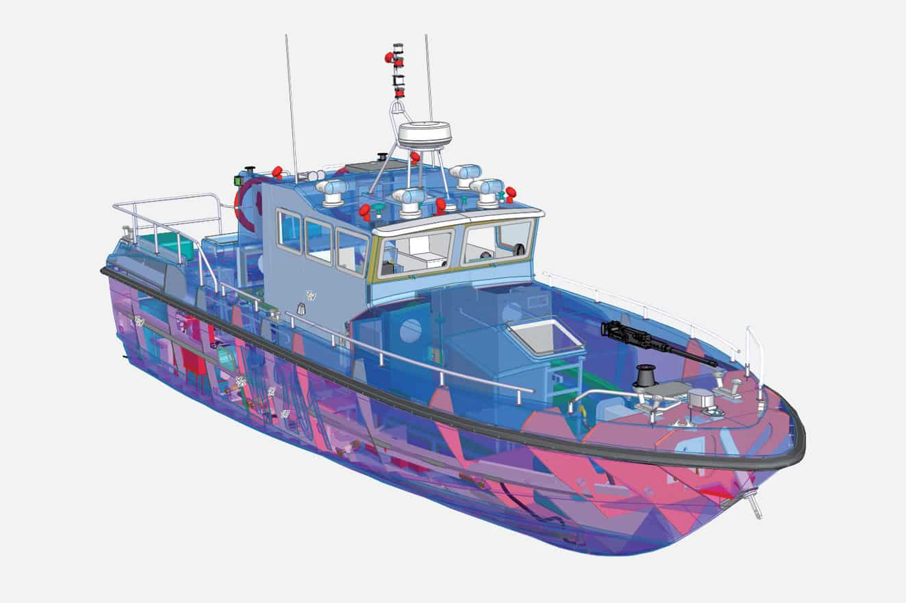

Manufacturing Execution System
Elinext helped modernize a legacy MES and integrate it with business systems.
Read the case studyFor Mohammed AlHumaid
Couach is growing its purchasing work. The current Achats role points to vendor data, ERP updates, contracts, and project buying that must stay clear between France and KSA.
The Achats hire says Couach is adding buying capacity, not just headcount. That means more RFQs, supplier checks, ERP updates, contracts, and project budgets. The hard part is keeping those facts clear across shipyard teams and KSA management. If the data sits in separate tools, late parts and supplier risk can hide until delivery pressure is already high.
A dedicated squad under your Product Owner, focused on one useful pilot.
Six to eight weeks, weekly demos, and a clear handover.

Map the flowTrace RFQ, supplier, contract, ERP update, and project buying steps with France and KSA users.
Connect the basicsBuild a supplier and contract view that sits over the current ERP and removes spreadsheet handoffs.
Show vessel riskAdd project buying views for vessel programs, budgets, lead times, and open supplier issues.
Prove it livePilot with real users, weekly QA, simple handover notes, and a backlog for phase two.
Elinext is a full-cycle software development provider founded in 1997. We have about 700 in-house specialists and use no freelancers or subcontractors. For Couach, the fit is enterprise systems, ERP links, dashboards, QA, and DevOps. We hold ISO 9001 and ISO 27001 certifications. Our named customers include Siemens, Volkswagen, Broadcom, TRUMPF, TUI, and Parrot. We can place a small squad under your Product Owner, or own a scoped pilot. That matches the procurement layer above: practical software, tested weekly, with clear handover.
Two related Elinext projects show the same type of work.
Elinext helped modernize a legacy MES and integrate it with business systems.
Read the case study
Elinext connected warehouse services, ERP flows, barcode work, QA, and support.
Read the case studyA short call can test fit and timing.
Contact ElinextCouach vessel image: Nicolas Claris / Couach public website.